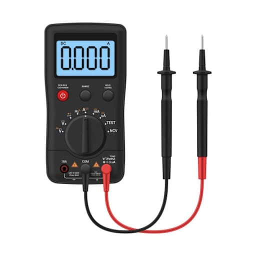
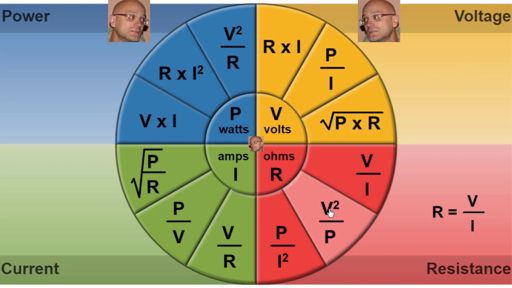
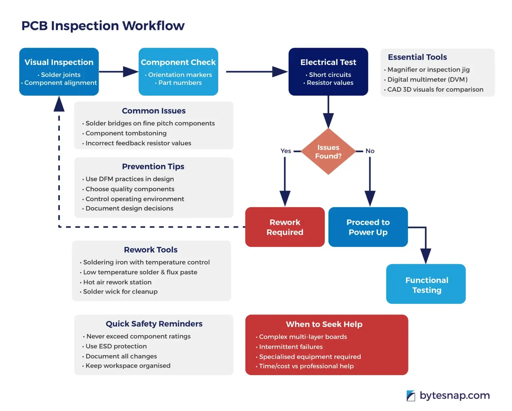

A technician is only as good as their ability to measure and interpret data.
Safe Probing Habits:

Finger Guards & Lead Integrity
Watt's Law in Action:
Example: If a circuit pulls 2A at 12V, how many Watts are used?

Modern DMMs have specific modes for specialized testing:
Continuity (The Beep): Used for checking "Opens" (broken wires) and "Shorts" (accidental connections).
Diode Check: Measures the forward voltage drop (usually 0.6V for Silicon).
If it beeps both ways, the diode is shorted!
Auto-Ranging: The meter finds the decimal point for you.
Hold Function: Freezes a reading when you can't see the screen.
The "Half-Split" Method:
⚠️ Always check your Ground reference first!
Troubleshooting Signs:

Follow the logic, not your gut!
Tomorrow: Diodes & Power—How we tame electricity to go in only one direction.